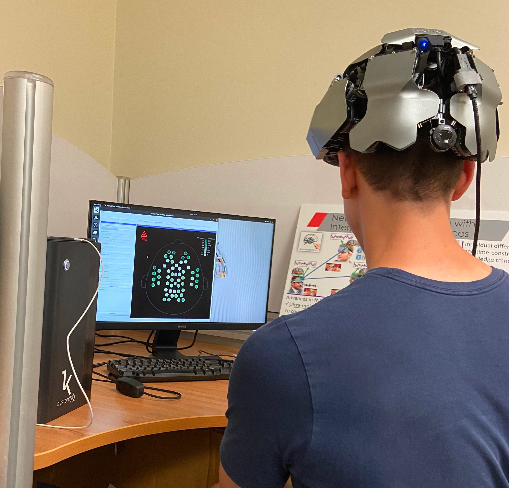
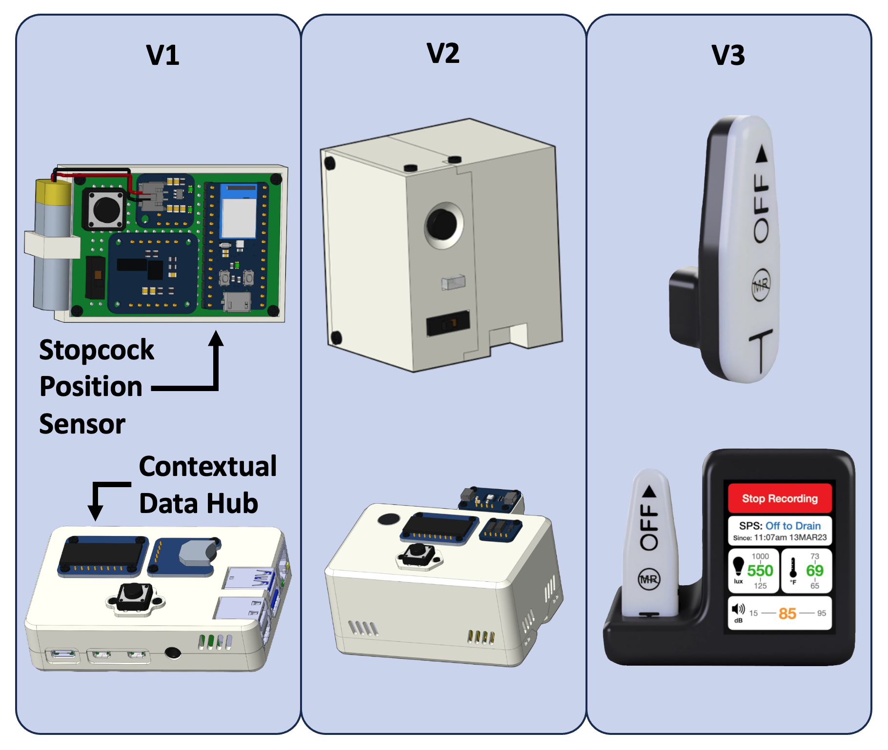
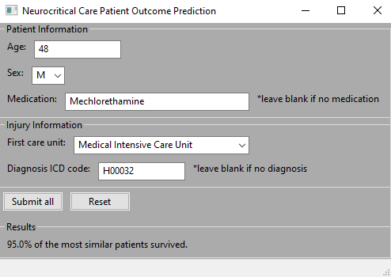
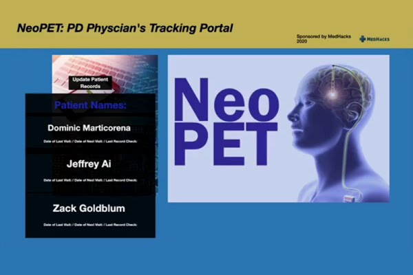

2023-2024
Evaluation of Cognitive Function using Time-Domain Optical Neuroimaging | Ayaz Lab
Master's thesis research project under Dr. Hasan Ayaz.

For my master's thesis, I investigated a miniaturized time-domain functional
near-infrared spectroscopy (TD-fNIRS) neuroimaging system, Kernel Flow, for assessing
the neural correlates of cognitive function. This was the first comprehensive
cognitive study using TD-fNIRS and whole-head optical brain monitoring, as well as the
first cognitive study with Kernel Flow. Through this project, I developed and
verified an experimental setup for investigating the neural correlates of cognitive
tasks and designed open-source neuroimaging tools to facilitate future research.
Check it out!
2022-2023
Novel Medical Devices for Neurocritical Care Monitoring | Moberg Analytics
Capturing contextual data and environmental factors in the neuro-ICU.
March 2022 - April 2023
In collaboration with UT Southwestern Medical Center, I designed and developed devices to
capture intracranial pressure (ICP) context as well as light, temperature, and noise levels
in neuro-ICU rooms. After the Stopcock Position Sensor for ICP context was clinically
validated at UT Southwestern Medical Center, I initiated a joint effort with a Drexel Senior
Design team to overhaul the devices and verify the sensors for environmental data capture.
Check it out!
BrainTech Podcast | YouTube and Spotify
I hosted and produced the BrainTech Podcast.

Through conversations with researchers, engineers, business leaders, and thinkers in brain
technology, I hope to inspire students who will shape the future of this field. This podcast
was spun out of the Brain Technology Convergence graduate course taught by Dr. Banu
Onaral. Four episodes were created as initial run. I would like to return to this project at
some point and do more with the BrainTech channel.
Check it
out!
Neurocritical Care Patient Outcome Predictor | Drexel University
A GUI-based tool for clinicians to predict the outcome of a neurocritical care patient.

Final project for the Advanced Biocomputational Languages graduate class taught by Dr.
Ahmet Sacan. We created a GUI for clinicians that predicts the outcome of a neurocritical care
patient. The parameters input for the current patient are compared to a database of
retrospectively collected patient and medical data using a k-nearest neighbors algorithm. The
utilized database is the Medical Information Mart for Intensive Care (MIMIC)-IV.
Check it
out!
TrachTalk | Drexel University
An independently operable pediatric tracheostomy cuff controller.

Junior Design project for a device that inflates or deflates a tracheostomy cuff at the
press of a button. The inflation pressure is set by a clinician using the dial and is maintained
while the patient is breathing. The patient presses the button when he or she wishes to speak
and the cuff deflates. This work was presented at several Drexel Biomed events at which I
participated on a Q&A panel for prospective students.
Check it out!
2021-2022
Real-Time EEG-Based BCI Motor Imagery Classifier | Drexel University
This software acquires 8-channel EEG data from the OpenBCI Ultracortex Mark IV headset, creates left vs. right-hand motor imagery datasets, and classifies user intention in near real-time.

Final project for the Neural Networks graduate course taught by Dr. Hualou Liang. We
evaluated
the classification accuracies of several convolutional neural network models from Army Research
Laboratory (ARL) EEGModels project and then trained our own to classify motor imagery intention
from my OpenBCI headset. The software handles EEG data acquisition from the headset,
pre-processing,
and visualization, as well as dataset creation and real-time classification using our model.
Check it out!
2020-2021
NeoPET | Johns Hopkins University MedHacks 2020
The Novel application for Parkinson's and Essential Tremor (NeoPET) provides an innovative way of tracking Parkinson's and Essential Tremor symptoms and treatment responses through a smartphone.

Collaborated with students from UMN to create a mobile app for Parkinson's and Essential Tremor
patients that uses machine learning to analyze and quantify symptom severity. We leveraged
accelerometer, gyroscope, and keystroke data streams from a smartphone to train the model and
create visualizations for clinicians to remotely monitor disease progression over time.
Built on Android and Google Firebase.
Check it
out!